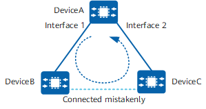

Example for Configuring MAC Address Flapping Detection
Networking Requirements
As shown in Figure 1, a network loop occurs because DeviceB and DeviceC are mistakenly connected using a network cable. Consequently, this causes MAC address flapping on DeviceA.
To quickly detect the loop, configure MAC address flapping detection on DeviceA. After this function is enabled, DeviceA checks whether MAC address flapping occurs between interfaces to determine the presence of a loop, and then carries out troubleshooting.

MAC address flapping detection applies only to single-ring scenarios. For details about limitations in multi-ring scenarios, see "Configuration Precautions for MAC."
In this example, interface 1 and interface 2 represent 10GE 0/0/1 and 10GE 0/0/2, respectively.

Configuration Roadmap
The configuration roadmap is as follows:
Enable MAC address flapping detection.
Set an aging time for flapping MAC addresses.
Configure an action against MAC address flapping on the interfaces to eliminate the loop.
Procedure
- Enable MAC address flapping detection.
<HUAWEI> system-view [HUAWEI] sysname DeviceA [DeviceA] mac-address flapping detection
- Set an aging time for flapping MAC addresses.
[DeviceA] mac-address flapping aging-time 500
- Set the action against MAC address flapping to error-down on 10GE 0/0/1 and 10GE 0/0/2.
[DeviceA] interface 10ge 0/0/1 [DeviceA-10GE0/0/1] portswitch [DeviceA-10GE0/0/1] mac-address flapping trigger error-down [DeviceA-10GE0/0/1] quit [DeviceA] interface 10ge 0/0/2 [DeviceA-10GE0/0/2] portswitch [DeviceA-10GE0/0/2] mac-address flapping trigger error-down [DeviceA-10GE0/0/2] quit
- Enable the error-down interfaces to recover after a specified delay.
[DeviceA] error-down auto-recovery cause mac-address-flapping interval 500
Verifying the Configuration
Run the display mac-address flapping command to check the MAC address flapping detection configuration.
[DeviceA] display mac-address flapping
MAC Address Flapping Configurations :
-------------------------------------------------------------------------
Flapping detection : Enable
Aging time(s) : 500
Quit-VLAN Recover time(m) : --
Exclude VLAN-list : --
Security level : Middle
Exclude BD-list : --
-------------------------------------------------------------------------
Run the display mac-address flapping active-table command to check active MAC address flapping records. The first interface that learns a MAC address is the correct outbound interface, and is referred to as the original interface (Original Port). An interface that learns the same MAC address later is called the move interface (Move Port). After this function is configured, the move interface is shut down.
[DeviceA] display mac-address flapping active-table S: start time E: end time (D): error down ------------------------------------------------------------------------------- Time : S:2019-10-26 10:39:27 E:2019-10-26 10:50:09 VLAN/BD/VSI : 2000/-/- MAC Address : 00e0-fc12-3456 Original-Port: 10GE0/0/1 Move-Ports : 10GE0/0/2 MoveNum : 65535 ------------------------------------------------------------------------------- Total items on slot 1: 1